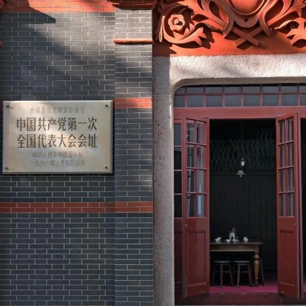
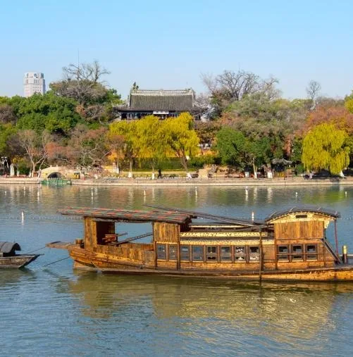
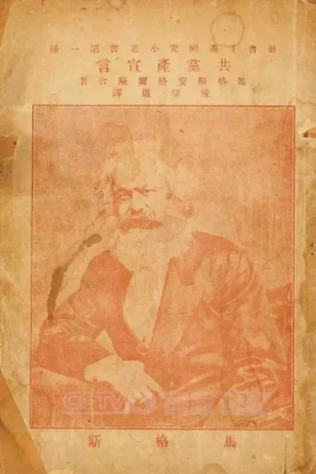

中国共产党成立
1921 年 7 月，13 位各地共产党早期组织的代表来到上海，秘密聚集在法租界望志路 106 号，准备召开代表大会成立中国共产党。 7 月 23 日晚，来自共产国际的代表马林首先致词。会议讨论了政治形势、党的基本任务，通过了党的第一个纲领，规定了党的组织原则。 7 月 30 日，会议因受到法租界巡捕的干扰，最后一天的会议转移到浙江嘉兴南湖的一条游船上举行。

01 · 背景起因 Background
思想基础。五四运动之后，马克思主义在中国得到广泛传播。一批先进知识分子在比较各种救国方案之后， 选择了马克思主义作为改造中国社会的思想武器，并开始走向工人群众，把理论传播与工人运动结合起来。
组织准备。在马克思主义传播与工人运动发展的基础上，各地共产党早期组织相继成立—— 上海、北京、武汉、长沙、济南、广州以及旅日组织先后建立，为建立全国性的统一政党做了组织上的准备。
02 · 事件经过 Course of Events
03 · 主要人物 Figures
上海李达、李汉俊；北京张国焘、刘仁静；长沙毛泽东、何叔衡；武汉董必武、陈潭秋； 济南王尽美、邓恩铭；广州陈公博；旅日周佛海；包惠僧（受陈独秀派遣）。
党的主要创始人之一。虽未参会，被选举为中央局书记，向大会提出关于组织与政策的四点书面意见。
党的主要创始人之一，因公务繁忙未能出席大会。
受共产国际派遣出席大会。马林在 7 月 23 日晚首先致词。
04 · 历史图片与史料 Archive


史料文献 · 中共一大关键节点
05 · 关键名词解释 Glossary
| 名词 | 解释 |
|---|---|
| 中国共产党第一次全国代表大会 | 1921 年 7 月 23 日在上海开幕、后转移至浙江嘉兴南湖游船举行的党的成立大会，简称"中共一大"。大会通过了党的第一个纲领，宣告中国共产党正式成立。 |
| 共产党早期组织 | 1920 年起在上海、北京、武汉、长沙、济南、广州及旅日等地相继建立的党的预备性组织，为召开全国代表大会、成立统一的中国共产党做了组织准备。 |
| 望志路 106 号 | 位于上海法租界的一幢石库门建筑，中共一大的开幕地点。现为中共一大会址纪念馆。 |
| 党的第一个纲领 | 中共一大通过的文件，规定了党的名称、奋斗目标与组织原则，明确党的名称为"中国共产党"。 |
| 中央局 | 中共一大选举产生的党的领导机构，陈独秀被选为中央局书记。 |
| 共产国际 | 即第三国际，1919 年成立的国际性共产党组织联合机构。派出马林、尼克尔斯基出席中共一大。 |
| 伟大建党精神 | 中国共产党在创建过程中形成的革命精神，是党的精神之源。理解其内涵是学习本主题的重要要求。 |
| 马克思主义中国化 | 把马克思列宁主义基本原理同中国具体实际相结合的过程。党在革命斗争中创立了毛泽东思想，这是马克思主义中国化的第一次历史性飞跃。 |
06 · 意义与价值 Significance
中国共产党的成立，是中华民族发展史上开天辟地的大事变。
是近代中国历史发展的必然产物，是中国人民在救亡图存斗争中顽强求索的必然产物。
党的一大宣告中国共产党正式成立。从此，中国出现了一个完全崭新的、用马列主义武装起来的、统一的无产阶级政党。
给灾难深重的中国人民带来了希望和光明，形成了伟大建党精神——中国共产党的精神之源。